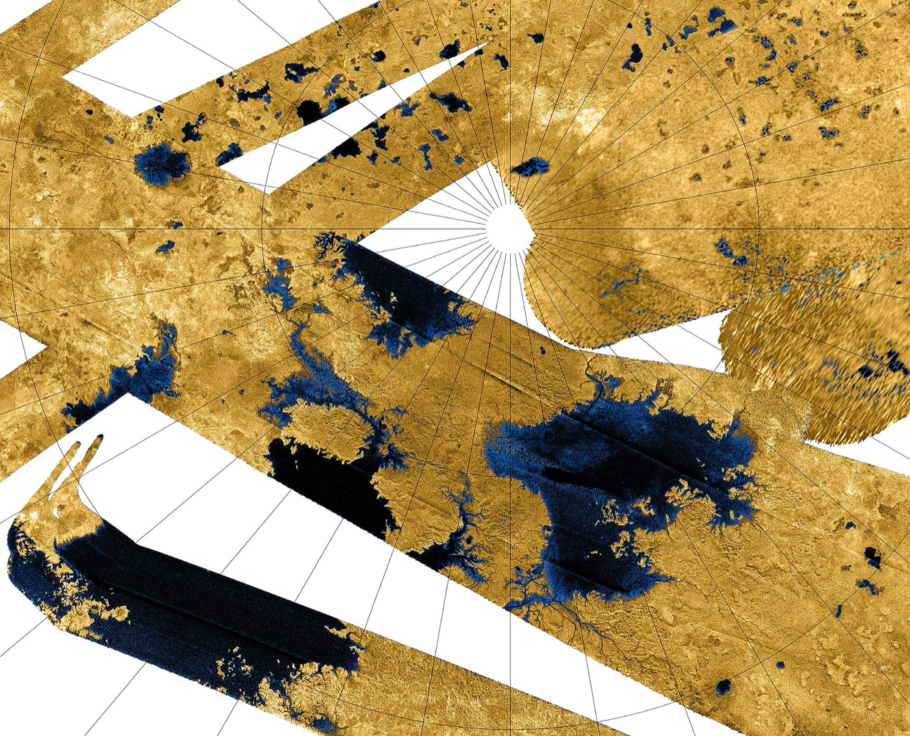

Titan
A laboratory for low-temperature prebiotic chemistry
Titan is the only moon in the Solar System with a significant atmosphere. High amounts of methane in its atmosphere and an extremely cold surface (roughly −180 degrees Celsius!) lead to a hydrologic cycle similar to water on Earth, where methane rains out and forms expansive lakes. Photochemistry involving methane also leads to the creation of complex hydrocarbons that give Titan its distinctive orange glow.

My work on Titan
While at NASA Goddard Space Flight Center (January–July 2021), I worked with advisor Dr. Conor Nixon to use data from the Spitzer Space Telescope to search for new molecules in Titan’s atmosphere. We were able to provide new data for spectroscopic models of Titan’s haze and found new signatures of propene in its atmosphere. Read more about this work in our paper in the Planetary Science Journal.
I am also part of the James Webb Space Telescope (JWST) Titan team, where we recently published a paper in Nature Astronomy detecting CH3 and cloud formation on Titan for the first time, using data from JWST GTO program 1251 (PI: Conor Nixon). You can read more about it in the press release published by NASA.
Conference poster
I was invited to present the following poster summarizing my work at the Planetary Systems and the Origins of Life in the Era of JWST conference (STScI, 2023).
Related JWST programs
I am on the data interpretation teams for these programs.
- Cycle 1
- Cycle 1
- Cycle 3
Related publications
- The atmosphere of Titan in late northern summer from JWST and Keck observations Nature Astronomy, 2025 * These authors contributed equally. DOI arXiv
- Spitzer IRS Observations of Titan as a Precursor to JWST MIRI Observations Planetary Science Journal, 4(6), 114, 2023 DOI arXiv
- The HITRAN2024 methane update JQSRT, 349, 109736, 2025 DOI arXiv